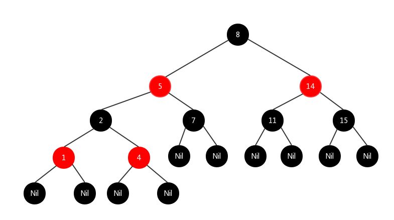
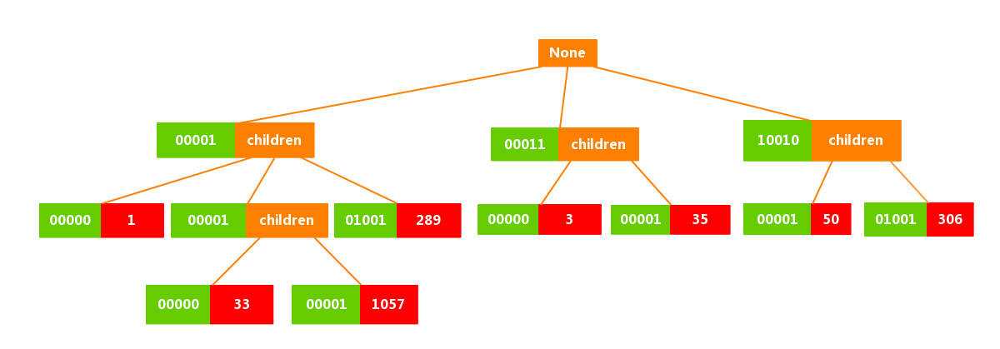
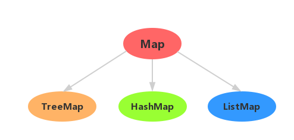
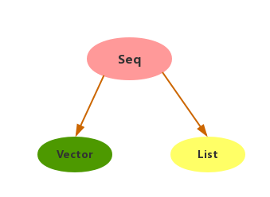
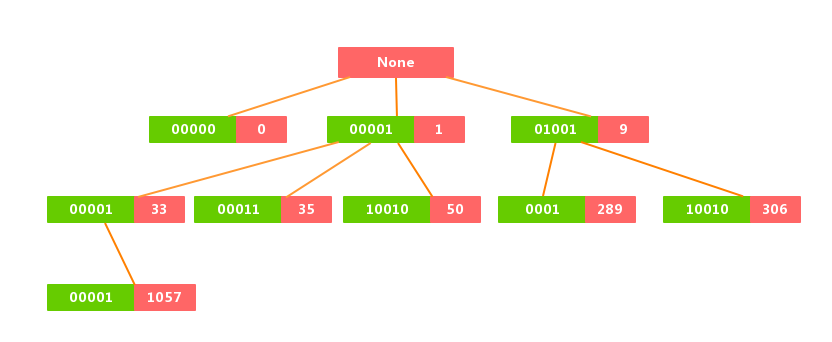
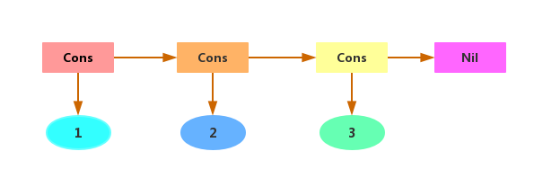

如何在 Scala 中科学地操作 collection（二）：集合性能比较
在平时使用集合的时候，我们经常会选择 Scala 中通用的集合，例如：Seq、Map、List等等，有的时候选择「通用集合」完全可以解决问题，但是当集合操作变得很复杂以至于涉及到「性能问题」的时候，采用「通用集合」可能并不是一个好的选择。在不同的场景下选择合适的集合可以使我们对于集合的操作更加高效。
大部分情况下，我们都会优先采用「不可变集合」，所以本文将通过比较几种常见的「不可变集合」来阐述各个集合之间的性能差异。
Set
通过上图可以看到，两种常用的类型：TreeSet、HashSet 都继承至 Set。
TreeSet
TreeSet 是用「红黑树」来实现的，「红黑树」是一种相对平衡的二叉查找树，它可以在 O(log2 n) 时间复杂度内做查找，例如：
val s = scala.collection.immutable.TreeSet(1, 2, 4, 5, 7, 8, 11, 14, 15)
s: scala.collection.immutable.TreeSet[Int] = TreeSet(1, 2, 4, 5, 7, 8, 11, 14, 15)
则其对应的红黑树为：

从上面「红黑树」的结构可以看到在对 TreeSet 进行查找或者修改操作时，其时间复杂度为 O(log2 n)。
HashSet
HashSet 是用 Hash Trie 来实现的，从表现形式上可以将 HashSet 看作是一种树结构，该树的每个节点包含32个元素或者32个子树，每个节点都存储相应的 hashcode ，为了方便描述这种结构我们先定义一个 HashSet 的实例，并将该实例用图表现出来：
scala> val s = scala.collection.immutable.HashSet(1, 3, 33, 35, 50, 289, 306, 1057)
s: scala.collection.immutable.HashSet[Int] = Set(289, 1, 1057, 33, 306, 3, 35, 50)
看到上面的代码，我们或许会有一个疑问，就是得到的 HashSet 中各个元素的顺序好像变了，这是因为在实现 HashSet 时，元素的顺序不是按照我们给定的顺序来的，而是根据元素对应的 hashcode 来决定的，在 HashSet 中，元素的 hashcode是通过下面的操作得到的：
def getHashCode(key: Int) = {
val hcode = key.##
var h: Int = hcode + ~(hcode << 9)
h = h ^ (h >>> 14)
h = h + (h << 4)
h ^ (h >>> 10)
}
为了方便理解，我们这里规定元素的 hashcode 就是它本身，那么之前的代码就变成了：
scala> val s = scala.collection.immutable.HashSet(1, 3, 33, 35, 50, 289, 306, 1057)
s: scala.collection.immutable.HashSet[Int] = Set(1, 33, 1057, 289, 3, 35, 50, 306)
其对应的树结构为： 
通过上图，我们可以看到「树」的每个节点都存储相应的 hashcode，在这棵「树」上查找某个值时，首先用该元素对应的 hashcode 的最后 5 个 bit 查找第一层「子树」，然后毎 5 个 bit 找到下一层 「子树」。当存储在一个节点中所有元素的代表他们当前所在层的 hashcode 位都不相同时，查找结束。例如：
如果我们要查找数字 1057 是否在这棵「树」上面：
将
1057转换为 「二进制」，我们得到00001 00001 00001，然后取出最后的5个bit：00001；查找第一层「子树」，找到
00001对应的节点，该节点有三个「孩子」，所以我们要进入下一层，接下来取出第二个「五位」：00001；查找第二层「子树」，找到
00001对应的节点，该节点有两个「孩子」，所以我们要进入下一层，接下来取出第三个「五位」：00001；查找第三层「子树」，找到
00001对应的节点，该节点就只有一个元素1057，所以我们找到了。
在这棵树中，我们查询 1057 的时间复杂度为 O(3)，由于 Hashset 中的每一个节点都可以有 32 个分支，所以其在查询或者修改等操作时的效率会大大提高，例如：对于一个拥有100万个元素的 HashSet，我们只需要四层节点。（因为106 ≈ 324），我们在查询其中的某一个元素时，最多只需要 O(4) 的时间复杂度，而采用 TreeSet 就需要 O(20) 的时间复杂度，所以在不出现「哈希碰撞」的情况下（在日常开发中使用 HashSet 极少会出现「哈希碰撞」），HashSet 的随机访问时间复杂度为 log32 n，比前面介绍的 TreeSet 要好。
总结
通过前面我们对两种 Set 的比较，我们可以得出：
当集合中元素不是很多，而且对效率要求不高的时候，选择通用的
Set就可以解决问题；当元素数量非常庞大，并且对效率要求比较高的时候，我们一般选择
HashSet；当选择
HashSet时，出现很严重的 「哈希碰撞」时，采用TreeSet。
Map

如上图所示，Map 支持三种类型：HashMap、TreeMap 和 ListMap，其中比较常用的是前面两种。
HashMap、TreeMap
HashMap 与我们前面提到的 HashSet 结构类似，同样，TreeMap 与 TreeSet 结构类似，一般情况下，优先选择 HashMap。
ListMap
ListMap 是一种「链表」结构，在对其中的元素进行操作的时候，我们通常都会去遍历其中的元素，所以其查询、修改等操作的时间复杂度也同列表长度成「线性关系」，一般情况下，在 Scala 中，我们很少使用 ListMap，只有当 Map 中处在前面的元素的访问频率远远大于处在后面的元素时，才会采用 ListMap。
总结
当集合中元素不是很多，而且对效率要求不高的时候，选择通用的
Map就可以解决问题当元素数量非常庞大，并且对效率要求比较高的时候，我们一般选择
HashMap；当选择
HashSet时，出现很严重的 「哈希碰撞」时，采用TreeMap；当
Map中处在前面的元素的访问频率远远大于处在后面的元素时，采用ListMap。
Seq

通过上图可以看到，两种常用的类型：Vector、List 都继承至 Seq
Vector
Vector 的结构与我们前面提到的 HashSet 非常的类似，我们可以将 Vector 看成是由元素的「下标」组成的「前缀树」，该树的每个节点也包含32个元素或者32个子树，每个节点存储相应下标对应的元素以及具有相同「前缀」的「孩子」，为了方便描述，我们依然先定义一个 Vector 的实例：
scala> val v = (0 to 1057).toVector
v: Vector[Int] = Vector(0, 1, 2, 3, ... , 1057)
我们定义了一个具有 1058 个元素的 Vector，每一个元素的下标与该元素的值相等。接下来我们用图将该实例表现出来：

上图展示了实例中的部分元素，可以看到具有相同「前缀」的元素拥有相同的「父亲」，例如：
元素 33、35、50对应的「二进制」分别是：00001 00001、00001 00011、00001 10010，它们的「高五位」也就是「前缀」都是 00001。
现在我们查找其中的某个元素 1057：
1057对应的下标是1057，转换为二进制为：00001 00001 00001；1057最高五位也就是第一个前缀为00001，在第一层「子树」中找到00001对应的节点；第二个五位也就是第二个 「前缀」是
00001，则在第二层「子树」中找到00001对应的节点；最后一个五位是
00001，在第三层子树中找到00001对应的节点，则该元素存在于这个节点中。
可以看到我们查询 1057 的时间复杂度为：O(3)，由于 Vector 也是采用具有 32 分支的树结构，所以它的查询、修改等操作的时间复杂度也是 log32 n，由于下标不会重复，所以不会像 HashSet 那样出现 「哈希碰撞」，所以它的效率比 HashSet 要好。
在 Scala 中使用集合的时候，如果没有特别的要求，我们应该首先选择 Vector。当然，vector 也有不适用的场景，如果我们要频繁地执行一个集合的「头」和「尾」的操作，选择 Vector 就不太好了，这时我们可以选择 List。
List
在日常开发中我们使用 List 的频率非常高，List 是个 「单链表」结构，其中的每个节点都可以看作是一个「格子」，每一个「格子」持有两个引用，一个引用指向值，另一个引用指向后续的元素。
scala> val l = List(1, 2, 3)
l: List[Int] = List(1, 2, 3)
其结构用图表示出来为：

List 只有在操作 「头部」和「尾部」时具有 O(1) 的复杂度，如果列表中的元素非常多，那 List 的效率远远不如前面提到的 Vector，所以只有当我们需要频繁操作集合中的首尾元素时，才去选择 List，大部分情况下， Vector 应该是我们缺省的选择。
总结
一般情况下，优先采用
Vector；只有在头尾操作非常频繁的时候选择
List。